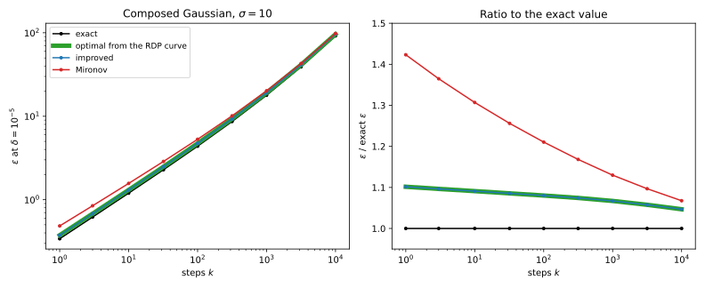

28 From Rényi DP to (ε, δ) and to tests
28.1 Why this matters
A Rényi differential privacy (RDP) accountant adds up the curves \(\varepsilon(\alpha)\) of a run’s steps, one value per order \(\alpha > 1\) (Rényi differential privacy). Nobody reports that curve. A paper, a model card or a regulator asks for an \((\varepsilon, \delta)\) differential privacy (DP) guarantee, or for a statement about attacks, so every RDP analysis ends with a conversion, and the conversion decides the number you publish.
Ask what a conversion is allowed to know. The privacy loss of an output is the log of how much more likely it is under one neighbouring dataset than under the other, and the RDP curve records exponential moments of that loss and nothing else. A conversion must therefore give a \(\delta\) that is safe for every mechanism with that curve, not just for yours. Mironov’s conversion, the original one, uses the moments crudely. The improved conversion uses them almost as well as anything can, at no cost. What remains, 5 to 10% of \(\varepsilon\) for the Gaussian mechanism, belongs to the summary itself.
The running example is the Gaussian mechanism. A step adds noise with standard deviation \(\sigma\) times the sensitivity, and \(k\) such steps compose to one Gaussian whose two output distributions are \(\mu = \sqrt k/\sigma\) noise standard deviations apart. Its RDP curve is \(\varepsilon(\alpha) = \alpha\mu^2/2\), so every number below depends only on \(\mu\). All use \(\delta = 10^{-5}\) and the part’s grid of 154 orders, from 1.1 to 512.
28.2 Mironov’s conversion and where it loses
Start from what \(\delta\) is. The smallest valid \(\delta\) at a given \(\varepsilon\) is an average over outputs: an output whose loss \(L\) exceeds \(\varepsilon\) breaks the \(e^\varepsilon\) bound only by its excess probability, which is the fraction \(1 - e^{\varepsilon - L}\) of its probability. An output just over the line contributes almost nothing, and one far over it contributes almost all of its probability.
Mironov’s conversion bounds that average in two steps. It first charges the whole probability of every output with \(L > \varepsilon\) to \(\delta\), which replaces \(\delta\) by the tail probability of the loss. It then bounds the tail with Markov’s inequality applied to \(e^{(\alpha - 1)L}\), whose average is what the RDP curve provides. Setting the result equal to \(\delta\) gives \[\varepsilon' = \varepsilon(\alpha) + \frac{\ln(1/\delta)}{\alpha - 1}, \tag{28.1}\] minimized over the orders of the grid.
Both steps lose on the Gaussian. Its loss is normal, and \(\varepsilon\) sits several standard deviations above the mean, where the density falls steeply; most of the tail lies just above \(\varepsilon\), exactly where each output’s true contribution is near zero, so the first step overcounts. The second step loses more. Markov’s inequality is tight only for a variable that puts all its mass at 0 and at the threshold, and a normal loss is nothing like that.
For a mean released with the Gaussian mechanism at \(\sigma = 1\), so \(\mu = 1\), the exact \(\varepsilon\) is 4.377. Charging the whole tail alone raises it to 4.765, and the Markov step to 5.299, at order 5.8. At \(\varepsilon = 5.299\) the true \(\delta\) is \(1.300\times10^{-7}\): you pay for \(\delta = 10^{-5}\) and get far less. The conversion is valid, just loose: safe but overstated. Older code and papers, including the original moments accountant, use it, so check which conversion each side used before comparing your \(\varepsilon\) with a published one.
28.3 The improved conversion
Taken together, the two steps replace each output’s contribution \((1 - e^{\varepsilon - L})_+\) by an exponential in \(L\) that lies above it, and an exponential is used because it is the only function whose average the RDP curve tells you. Mironov’s exponential equals 1 at \(L = \varepsilon\), where the true contribution is still 0. A lower exponential still stays above the contribution, touching it just to the right of \(\varepsilon\). Using the lowest one is the whole improvement (Balle, Barthe, Gaboardi, Hsu & Sato 2020; Canonne, Kamath & Steinke 2020). An \((\alpha, \varepsilon(\alpha))\)-RDP mechanism is then \((\varepsilon', \delta)\)-DP with \[\varepsilon' = \varepsilon(\alpha) + \ln\frac{\alpha - 1}{\alpha} - \frac{\ln\delta + \ln\alpha}{\alpha - 1}, \tag{28.2}\] again minimized over the grid, and reported as 0 if it comes out negative.
Compare the two formulas at the same order and both the curve and the \(\ln(1/\delta)\) term cancel. What is left, the saving, depends only on the order, not on the mechanism or \(\delta\): \[\Delta(\alpha) = \frac{\ln\alpha}{\alpha - 1} + \ln\frac{\alpha}{\alpha - 1}. \tag{28.3}\] It is large at small orders and fades at large ones (Table 28.1). That gives you a diagnostic. If two accountants report values about 0.4 apart from the same curve at a best order near 10, one of them is using Mironov’s conversion. Opacus and Google’s dp_accounting both use the improved one, and if you implement a conversion yourself, use Equation 28.2.
| \(\alpha\) | \(\delta\) factor | \(\varepsilon\) saving \(\Delta(\alpha)\) |
|---|---|---|
| 2 | 0.2500 | 1.3863 |
| 10 | 0.0387 | 0.3612 |
| 100 | 0.0037 | 0.0566 |
For the mean released at \(\sigma = 1\), the improved conversion gives \((4.729, 10^{-5})\)-DP at order 5.4, against Mironov’s 5.299 and the exact 4.377. It removes 0.570 of the 0.921 excess, from the same curve. It even beats the 4.765 of charging the whole tail, because its exponential is allowed to dip below 1 just above \(\varepsilon\), where the true contributions are small. At \(\mu = 10\), which is 100 steps at \(\sigma = 1\), it gives 96.116 against Mironov’s 98.026 and the exact 91.817.
28.4 Choosing the order
The converted \(\varepsilon'\) is the curve, which grows with the order, plus a term in \(\ln(1/\delta)/(\alpha - 1)\), which shrinks with it, and the best order balances the two. For a composed Gaussian with curve \(\rho\alpha\), where \(\rho = \mu^2/2 = k/(2\sigma^2)\), setting the derivative to zero gives \(\rho(\alpha - 1)^2 = \ln\frac{1}{\alpha\delta}\), so roughly \[\alpha^* - 1 \approx \sqrt{\ln(1/\delta)/\rho} = \sigma\sqrt{2\ln(1/\delta)/k}. \tag{28.4}\] The formula says how the best order moves. More steps or less noise make the curve steeper, so high orders get expensive and the best order moves toward 1. A smaller \(\delta\) pushes it up, but only through the square root of a logarithm, so \(\delta\) hardly matters: at \(\mu = 1\), going from \(\delta = 10^{-5}\) to \(10^{-10}\) moves the best order only from 5.432 to 7.483.
Table 28.2 shows the range a grid must cover. One release at \(\sigma = 10\) wants order 40.525, a long run at \(\sigma = 1\) wants 1.048. At \(k = 10{,}000\) that order is below the grid’s smallest, 1.1, and the grid’s answer is 135.987 larger than the continuous optimum.
| \(\sigma\) | \(k\) | Best order (continuous / grid) | \(\varepsilon\) (continuous / grid) |
|---|---|---|---|
| 10 | 1 | 40.525 / 41 | 0.375 / 0.375 |
| 1 | 1 | 5.432 / 5.4 | 4.728 / 4.729 |
| 1 | 100 | 1.472 / 1.5 | 96.035 / 96.116 |
| 1 | 10,000 | 1.048 / 1.1 | 5475.791 / 5611.778 |
So if an accountant reports its best order at either end of its grid, the true optimum lies outside and the reported \(\varepsilon\) is larger than necessary: extend the grid in that direction. The other end matters too. The differentially private version of stochastic gradient descent (SGD), DP-SGD, runs subsampled steps (Amplification by subsampling), whose curves are tiny at small orders and therefore want large ones, which is why the grid ends at 128, 256 and 512.
28.5 The slack no conversion removes
The improved conversion still stays above the exact \(\varepsilon\). That is the summary’s fault, not the formula’s, and a counterexample shows why. Take a mechanism with only two outputs: almost all its probability sits on an output with loss close to 0, and a sliver on an output with loss 4.5956. This mechanism satisfies the Gaussian’s RDP curve at \(\mu = 1\) at every order, yet at \(\varepsilon = 4.377\), the Gaussian’s exact value, its \(\delta\) is \(4.4698\times10^{-5}\), not \(10^{-5}\). A certificate computed from the curve alone cannot tell the two mechanisms apart, so it must cover both, and it cannot certify 4.377. The best any method can certify from the curve is 4.7284 to four decimals, which is what the improved conversion gives at its best real order.
Across run lengths (Table 28.3, Figure 28.1), the best conversion from the curve and the improved conversion agree to three decimals, and both exceed the exact \(\varepsilon\) by 5 to 10%.
| \(k\) | \(\mu\) | Exact | Optimal from the curve | Improved | Mironov |
|---|---|---|---|---|---|
| 1 | 0.100 | 0.341 | 0.375 | 0.375 | 0.485 |
| 10 | 0.316 | 1.199 | 1.308 | 1.308 | 1.568 |
| 100 | 1.000 | 4.377 | 4.729 | 4.729 | 5.299 |
| 1000 | 3.162 | 17.857 | 19.054 | 19.054 | 20.175 |
| 10,000 | 10.000 | 91.817 | 96.116 | 96.116 | 98.026 |

So if a reviewer asks whether a better conversion would lower your \((4.729, 10^{-5})\) for a Gaussian with \(\mu = 1\), the answer is no. When the slack matters, change the summary, not the formula: track the trade-off function (f-DP and Gaussian differential privacy) or the whole privacy loss distribution (Numerical accounting with privacy loss distributions). The 5 to 10% is for the plain Gaussian. DP-SGD’s subsampled steps have a curve that is not a line, and the gap can be much larger; for the part’s running example (\(q = 0.01\), \(\sigma = 1\), \(k = 10{,}000\)), RDP gives 7.43 with Mironov’s conversion and 6.71 with the improved one, and Choosing an accountant measures the gap.
The same reasoning governs mixing RDP with other guarantees. An \((\varepsilon, \delta)\)-DP guarantee with \(\delta > 0\) implies no RDP bound at any order. A mechanism that publishes your record with probability \(\delta\) is \((0, \delta)\)-DP, but it has an output that is impossible without you, an infinite likelihood ratio, and so an infinite exponential moment. Never feed an \((\varepsilon, \delta)\) component into an RDP accountant as if it had a curve; you need to know how its \(\delta\) arises, for example from Gaussian noise. A pure \(\varepsilon\)-DP guarantee has no such outputs, and it implies \((\alpha, \min(\varepsilon, \alpha\varepsilon^2/2))\)-RDP at every order (Bun & Steinke 2016).
28.6 RDP as a bound on attacks
A membership test looks at the output and decides “your record was used” or “it was not”. Whatever it computes, its verdict is a coin: it says “used” with probability \(a\), its false-positive rate, when the record was absent, and with probability \(1 - b\), its power, when it was present. The verdict is computed from the output, so it cannot be further apart in the two worlds than the output itself, and the Rényi divergence between the two coins is at most \(\varepsilon(\alpha)\) at every order (Balle et al. 2020). Each order thus constrains every test’s \((a, b)\).
The constraints of different orders bend differently. Large orders weigh the extreme outputs heavily, so they guard small false-positive rates; small orders guard the bulk. An \((\varepsilon, \delta)\) pair, by contrast, constrains every test by one straight line, power \(\le e^\varepsilon a + \delta\), which can touch the curved region the orders allow at only one point and lies far above it elsewhere.
The gap matters for audits. An auditor attacks the mean released at \(\sigma = 1\) with a false-positive rate of \(a = 10^{-3}\). The RDP curve guarantees that no test has power above \(2.4910\times10^{-2}\); the best test against the Gaussian actually reaches \(1.8298\times10^{-2}\). The \((4.729, 10^{-5})\) guarantee from the improved conversion only says power \(\le e^{4.729}\times10^{-3} + 10^{-5} = 0.1131\), more than four times the curve’s bound. So when you translate an RDP result into attack risk, don’t go through one \((\varepsilon, \delta)\) pair: at low false-positive rates, the ones that matter for membership attacks, it throws away most of what the curve says. Use the curve, or better, the trade-off function of f-DP and Gaussian differential privacy.
28.7 Code
Both conversions fit in a few lines. This snippet converts the composed Gaussian’s curve on the part’s grid of orders, for the single release (\(\mu = 1\)) and for 100 steps at \(\sigma = 1\) (\(\mu = 10\)).
from math import log
ORDERS = [1 + x / 10 for x in range(1, 100)] + list(range(12, 64)) + [128, 256, 512]
def mironov(rdp: float, alpha: float, delta: float) -> float:
return rdp + log(1 / delta) / (alpha - 1)
def improved(rdp: float, alpha: float, delta: float) -> float:
"""Balle et al. (2020); Canonne, Kamath & Steinke (2020). Clipped at 0."""
return max(0.0, rdp + log((alpha - 1) / alpha) - (log(delta) + log(alpha)) / (alpha - 1))
def report(mu: float, delta: float = 1e-5) -> str:
"""Both conversions for a composed Gaussian with mu = sqrt(steps) / sigma."""
curve = [a * mu**2 / 2 for a in ORDERS]
mir = min((mironov(e, a, delta), a) for a, e in zip(ORDERS, curve))
imp = min((improved(e, a, delta), a) for a, e in zip(ORDERS, curve))
return "Mironov %.3f at order %g, improved %.3f at order %g" % (*mir, *imp)
print(report(1.0)) # Mironov 5.299 at order 5.8, improved 4.729 at order 5.4
print(report(10.0)) # Mironov 98.026 at order 1.5, improved 96.116 at order 1.5To convert any other mechanism, replace the curve by its RDP values on the same grid. The full edition’s script, rdp_conversions.py, also computes the exact Gaussian values, the optimal conversion and the bound on tests:
uv run python code/part04-privacy-accounting/rdp_conversions.py28.8 Cheat sheet
| Result | Formula | Notes |
|---|---|---|
| Mironov’s conversion | \(\varepsilon' = \varepsilon(\alpha) + \ln(1/\delta)/(\alpha - 1)\) | Valid but loose; 1.07–1.42 times exact on the Gaussian at \(\sigma = 10\) |
| Improved conversion | \(\varepsilon' = \varepsilon(\alpha) + \ln\frac{\alpha - 1}{\alpha} - \frac{\ln\delta + \ln\alpha}{\alpha - 1}\) | Use this; clip at 0 |
| Saving at a fixed order | \(\Delta(\alpha) = \frac{\ln\alpha}{\alpha - 1} + \ln\frac{\alpha}{\alpha - 1}\) | 1.39 at order 2, 0.36 at 10, 0.06 at 100 |
| Best order, composed Gaussian | \(\rho(\alpha - 1)^2 = \ln\frac{1}{\alpha\delta}\), \(\rho = k/(2\sigma^2)\) | Moves toward 1 as \(k\) grows |
| Unavoidable slack | 5 to 10% of \(\varepsilon\) for the Gaussian | Larger for subsampled DP-SGD |
| \((\varepsilon, \delta)\) to RDP | Impossible for \(\delta > 0\) | Need the mechanism, not the pair |
| \(\varepsilon\)-DP to RDP | \(\varepsilon(\alpha) \le \min(\varepsilon, \alpha\varepsilon^2/2)\) | Bun & Steinke 2016 |
Rules of thumb
- Always use the improved conversion. It is free and, for the Gaussian, matches the best any method can do from the curve.
- Check the best order. If it sits at either end of the grid, extend the grid.
- Expect an RDP accountant to overstate the plain Gaussian’s \(\varepsilon\) by 5 to 10%, and subsampled DP-SGD’s by more. If that matters, use a privacy loss distribution accountant.
- Read an RDP result as a bound on attacks through the whole curve, not through one \((\varepsilon, \delta)\) pair.
28.9 Further reading
- Balle, Barthe, Gaboardi, Hsu & Sato, “Hypothesis Testing Interpretations and Rényi Differential Privacy” (AISTATS 2020): the improved conversion as a tangent line, and the constraint an RDP curve puts on tests.
- Canonne, Kamath & Steinke, “The Discrete Gaussian for Differential Privacy” (NeurIPS 2020): the short proof of the improved conversion, Proposition 12.
- Steinke, “Composition of Differential Privacy & Privacy Amplification by Subsampling” (2022 survey): privacy loss, RDP and conversions in one place, with their tightness.
Derivations. Every result in this chapter is derived step by step in the full edition’s chapter.